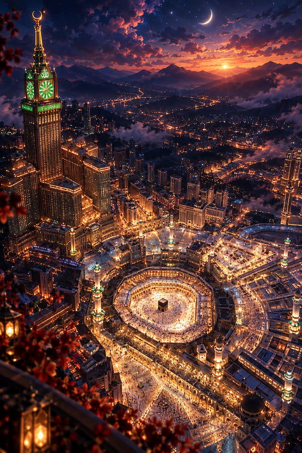
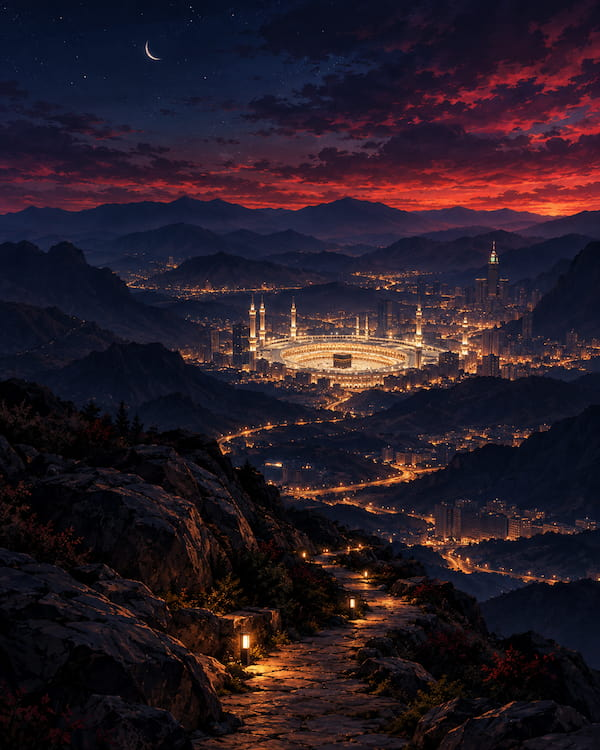
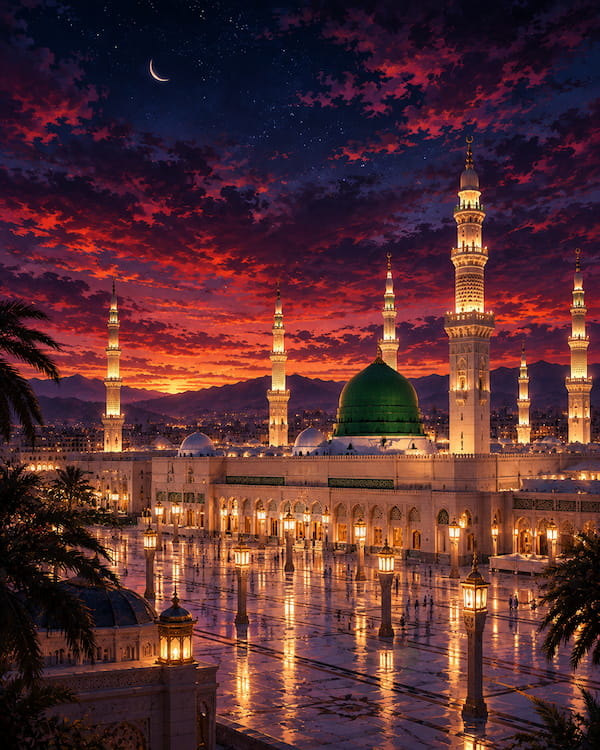
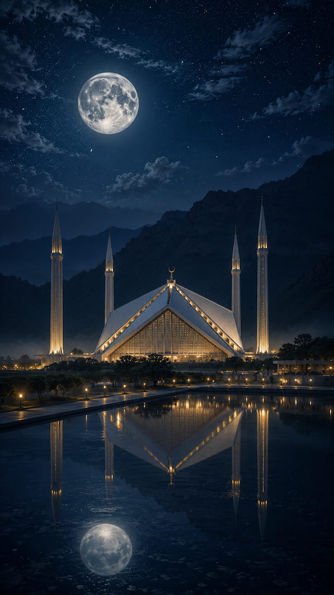
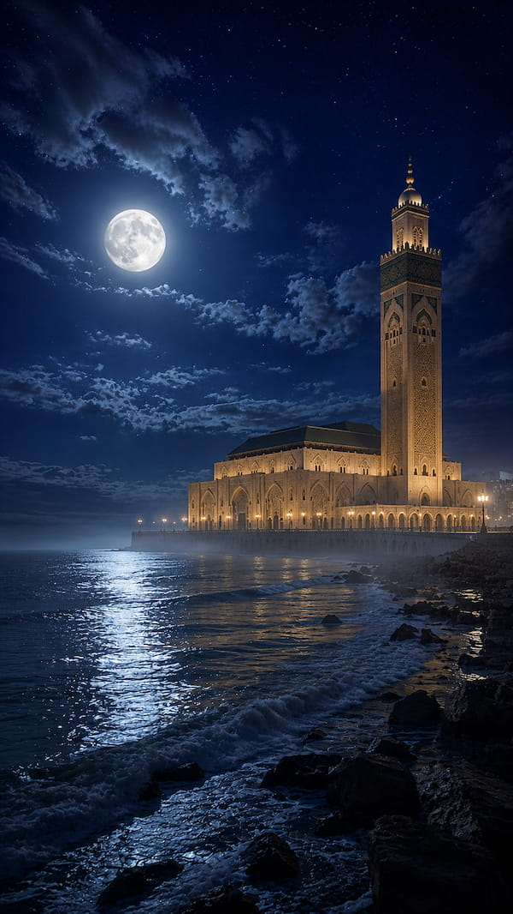
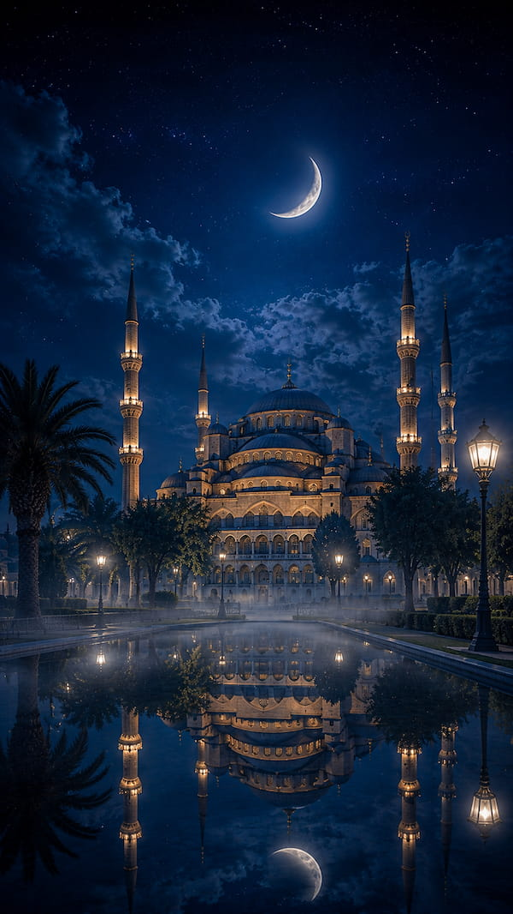
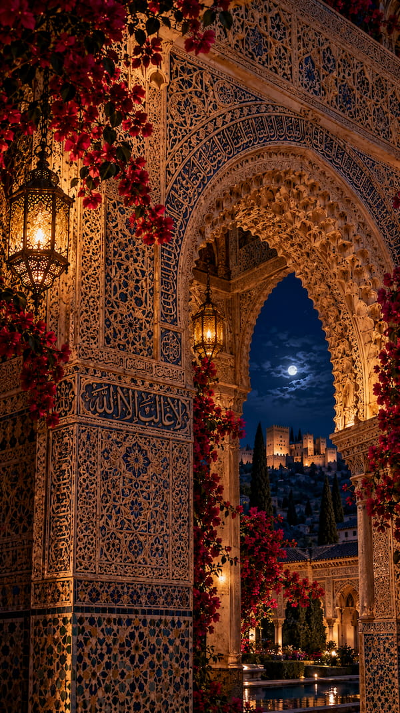
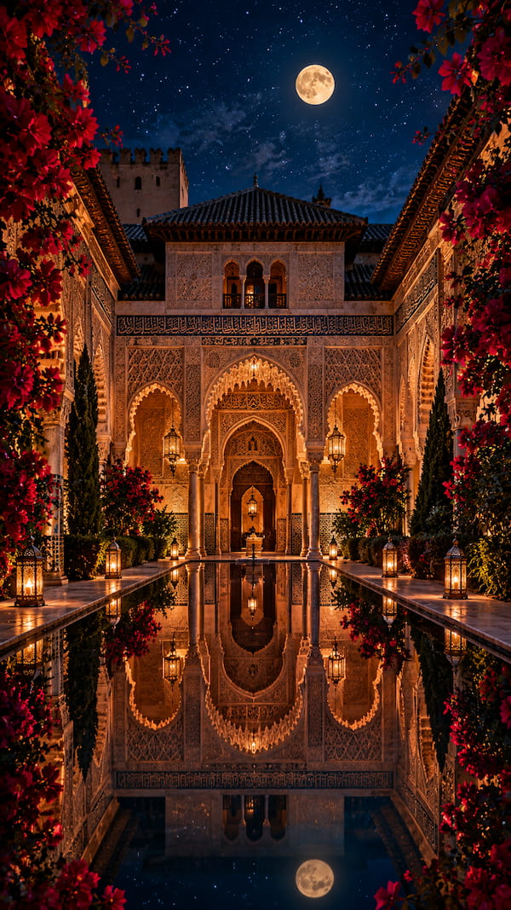

Spiritual and Islamic Wallpapers
Quiet moments of faith, captured in warm light and peaceful skies. Tap or click any wallpaper to see it, and save it to your phone

Sacred Mosque
Download

Path
Download

The Green Dome
Download

Mountain Sanctuary
Download

By the Sea
Download

Night of Serenity
Download

Moonlit Archway
Download

Reflections of the Palace
Download
 Garden of Light
Download
Garden of Light
Download
← Back to all collections